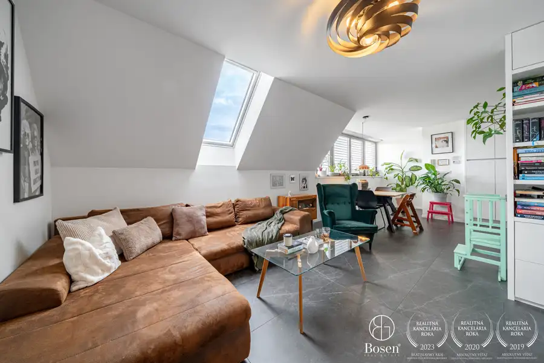
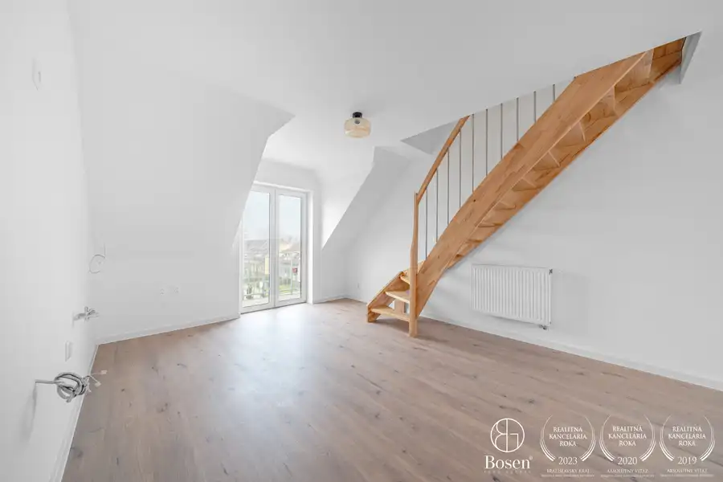

BOSEN | Rodinný dom, novostavba, 446 m2
Leopoldov
- Plocha97 m²
- StavNovostavba
- VlastníctvoOsobné
O nehnuteľnosti
Bosen Group Vám exkluzívne ponúka na predaj 4 izbovú novostavbu rodinného domu v obci Madunice s pozemkom s rozlohou 446 m2.Linka na virtuálnu prehliadku:https://my.matterport.com/show/?m=rSCKj1WVa8rPOPIS NEHNUTEĽNOSTI:Výborne dispozične riešená zabývaná novostavba bez nutnosti ďalších investícií, ktorá je pripravená na nasťahovanie nového vlastníka. Má výmeru 97 m2 a nachádza sa v tichej uličke neďaleko centra obce. Zastavaná plocha je 121 m2.TECHNICKÉ PARAMETRE:Dom je súčasťou dvojdomu s vlastným obvodovým múrom a kvalitným odhlučneným od susedaTehlová stavbaKolaudácia - 12/2023Inžinierske siete – elektrina, voda, kanalizácia, optikaVykurovanie – elektrické podlahové, krb v obývacej izbeVetranie – rekuperácia, bez potreby klimatizácieSmart inteligentné vypínače na svetlo a Smart termostaty v každej miestnostiV celom dome kompozitná podlahaPríprava na alarm a videovrátnikaDISPOZÍCIA:Dom pozostáva zo vstupnej chodby, priestrannej obývacej izby prepojenej s kuchyňou s východom na terasu, detskej izby, pracovne, spálne s východom do záhrady, technickej miestnosti, kúpeľne s vaňou a sprchovacím kútom spojenej s toaletou a samostatnej toalety pri vstupe.ZÁHRADA:Záhrada je vyrovnaná, zatrávnená a oplotená z troch strán. Pri dome sa nachádza priestranný záhradný domček.PARKOVANIE:4 parkovacie miesta priamo pred domom.VÝHODY:Dom bez potreby akýchkoľvek úprav a investíciíMožnosť ponechania zariadenia v domeVýborná lokalita v tichom prostredíSmart technológie, ktoré umožňujú ovládať osvetlenie a kúrenie priamo v aplikácii Vášho telefónuKvalitné prevedenie štandardu v domeLOKALITA:Rodinný dom sa nachádza v pokojnej časti obce Madunice, ktorá je charakteristická modernou zástavbou novších rodinných domov. Lokalita ponúka príjemné a tiché bývanie s minimálnou premávkou, ideálne pre rodiny aj ľudí hľadajúcich pokoj mimo ruchu mesta. Veľkou výhodou je blízkosť centra obce, vďaka čomu máte kompletnú občiansku vybavenosť na dosah. Madunice zároveň disponujú výbornou dostupnosťou do Leopoldova, Piešťan, Hlohovca, Trnavy a taktiež dobrým napojením na diaľnicu D1.CENA: 275.000 EURMAKLÉR: Veronika Kľačková +421 911 419 615 klackova@bosen.skRealitná kancelária BOSEN je členom Realitnej únie SR a riadi sa jej Realitným poriadkom. Uvedená cena je konečná, zahŕňa províziu realitnej kancelárie, právne služby poskytované advokátskou kanceláriou, úhradu základného správneho poplatku na katastri, poradenstvo pri prevode nehnuteľnosti a bezplatnú ponuku financovania prostredníctvom hypotéky.
Parametre
| Druh | Rodinný dom |
|---|---|
| Dátum zverejnenia | 1. 9. 2026 |
| Plocha pozemku | 446 m² |
| Plocha terasy v m2 | 15 m² |
| Počet izieb / miestností | 4 |
| Rok kolaudácie | 2023 |
| Stav nehnuteľnosti | Novostavba |
| Telekomunikácie | Optická sieť |
| Terén pozemku | Rovinatý |
| Typ | Predaj |
| Typ konštrukcie | Tehlová |
| Vlastníctvo | Osobné |
| Vybavenie | Terasa |
| Vykurovanie | Podlahové |
| Zastavaná plocha | 121 m² |
| Úžitková plocha | 97 m² |
Kde to je


Mohlo by Vás zaujímať

DomNové10 685 000 €BOSEN | Dom s 2 bytovými jednotkami v centre Trnavy, 211 m2 Trnava 211 m² Bosen Group Vám exkluzívne ponúka na predaj dom s dvojgarážou v historickom centre Trnavy, na ulici Michalská rozdelený na dve bytové jednotky.Linka…
BytNové10 120 400 €BOSEN | Priestranný 3 izbový mezonet, novostavba Tomášikovo Tomášikovo 3-izbový71.12 m²2. podlažie BOSEN | Priestranný 3 izbový mezonet, novostavba TomášikovoBosen Group Vám exkluzívne ponúka na predaj 3-izbový mezonet v novostavbe Bývanie pri… DomNové10
275 000 €BOSEN | Moderná 4 izbová novostavba, 446 m2
Piešťany
97 m²
Bosen Group Vám exkluzívne ponúka na predaj 4 izbovú novostavbu rodinného domu v obci Madunice s pozemkom s rozlohou 446 m2.Linka na virtuálnu…
DomNové10
275 000 €BOSEN | Moderná 4 izbová novostavba, 446 m2
Piešťany
97 m²
Bosen Group Vám exkluzívne ponúka na predaj 4 izbovú novostavbu rodinného domu v obci Madunice s pozemkom s rozlohou 446 m2.Linka na virtuálnu…